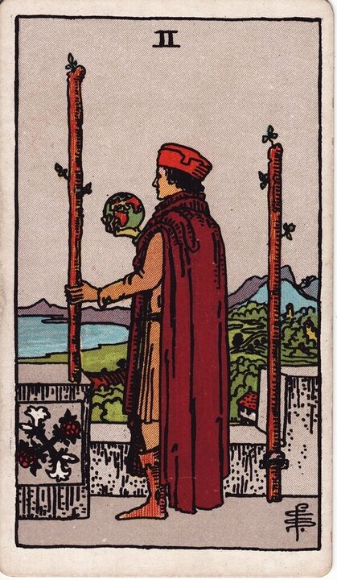

Minor Arcana · Suit of Wands
Two of Wands Tarot Card Meaning
The Two of Wands is the moment you hold the world and decide where to take it — vision, planning, and a choice. Want to know what it means in your spread? Every reader on our line is hand-vetted — connect in under 60 seconds, $1 for your first minute, hang up anytime.
- Hand-vetted readers
- Available 24/7
- Hang up anytime

Two of Wands — What It Shows
A figure stands on a castle rampart holding a small globe, looking out over land and sea. One wand is fixed to the wall; he holds the other. He has already built something — the castle behind him is real — but his gaze is on the horizon. The Two of Wands is the planning stage of the fire suit: the Ace lit the spark, and now you're standing at the edge of what's safe, deciding whether to expand into the wider world.
Two of Wands Upright Meaning
Upright, the Two of Wands is vision and forward planning. You're not starting from nothing — you have a foundation — but you're being asked to choose a direction and think bigger than the comfortable known. It's the card of "what's my next move," holding the whole world in your hand and realizing the choice is genuinely yours.
Two of Wands Reversed Meaning
Reversed, it's the fear of leaving the castle. Indecision, overthinking, playing small, or staying with the safe option when something in you knows it's time to expand. It can also mean a plan that's all dreaming and no commitment.
Two of Wands in Love & Relationships
In love, the Two of Wands is a crossroads about the future of a connection — to commit, to take it long-distance, to move in, or to broaden your dating life. Example: a caller torn between two people drew the Two of Wands; the reading focused less on "which one" and more on what future she actually wanted, since the card puts the decision and the planning in her hands.
Two of Wands in Career & Money
For work it's planning a bigger move — a new market, a relocation, a leap from a stable job toward something more ambitious. Example: someone with a steady role considering going freelance pulled this card; the message was that the foundation is solid and the vision is valid, but he needs an actual plan, not just the view from the wall.
Two of Wands as Advice
As advice: decide. Look at the whole horizon, choose the bolder, better-aligned path, and make a concrete plan to leave the comfort zone. The card warns against admiring the view forever.
What People Ask About the Two of Wands
Common questions readers hear about this card:
"Does it mean I have to choose between two things?"
Often — two wands, two paths. It asks for a decision, not a fence.
"Is it a long-distance card?"
It can be — the globe and horizon often point to distance, travel, or expansion abroad.
"Two of Wands vs. Three of Wands?"
Two is planning the move; Three is the move already underway, waiting on results.
"Does it mean leaving my comfort zone?"
Frequently yes — that's the heart of the card's tension.
Two of Wands — Yes or No?
A conditional yes: yes if you actually commit and plan; "stuck" if you keep deliberating. Reversed leans no, or "not while you're playing it safe."
Two of Wands Reversed in Love & Career
Reversed, the Two of Wands is worth unpacking by area. In love, it's fear of leaving the safe-but-stale: staying in a comfortable connection that isn't growing, avoiding the conversation about the future, or refusing to commit to one direction (or one person). It can also be a plan for the relationship that never gets acted on. In career, reversed it's playing small — turning down the bigger opportunity, over-analysing instead of choosing, or clinging to a secure role while quietly outgrowing it. In both, the card's reversed message is that the comfort zone has become the cage. The fix isn't a grander vision; it's finally picking a direction and committing to a first concrete step, which is exactly the kind of stuck point a live reader can help you move.
Two of Wands Timing in a Reading
Timing is the least precise thing tarot does, so treat this as a lean, not a deadline. The Two of Wands is the planning beat of the fire suit, so it tends to read as soon but not instant — a decision window over the coming weeks rather than a same-day event. It often marks the moment just before movement: the choice is ripe, the launch is next. Reversed, timing drags while you hesitate at the edge of the comfort zone. A live reader will pin this far better from the surrounding cards and your question than any card can on its own.
Two of Wands Card Combinations
Context changes everything — a few pairings readers see often:
Two of Wands + The World
An expansion or relocation that genuinely pays off — think bigger.
Two of Wands + Three of Wands
The plan stops being theoretical and is launched and progressing.
Two of Wands + Eight of Cups
Leaving the safe option behind to pursue the larger vision.
Two of Wands in a Tarot Reading
A meanings page is the map; a live reading is the territory. The Two of Wands shifts with its position and the cards around it — which is what a hand-vetted reader interprets for your question. See the full Suit of Wands, all 56 cards on the Minor Arcana hub, or start a phone tarot reading.
← Ace of Wands · Next: Three of Wands →
What Does the Two of Wands Mean for You?
A meanings list is the map; a live reading is the territory. We'll connect you with the right hand-vetted tarot reader in under 60 seconds. $1/min first call · 15 minutes for $10 · hang up anytime · 100% satisfaction promise.
Call (888) 920-6662 NowTwo of Wands — Frequently Asked Questions
What does the Two of Wands mean?
Planning and vision — you have the spark and now you choose your direction.
What does it mean reversed?
Fear of leaving the comfort zone, indecision, or playing it too safe.
What does the Two of Wands mean in love?
Deciding the future of a connection — commitment, expansion, or weighing options.
Is it a yes or no card?
A conditional yes — yes if you commit and plan rather than stay on the fence.
How much does a reading cost?
First-time callers pay $1/min, or 15 minutes for $10, and you can hang up anytime.
Get Your Tarot Reading Now
Connected to a hand-vetted reader in under 60 seconds, the cards pulled on your real question, and you hang up with clarity.
Call (888) 920-6662